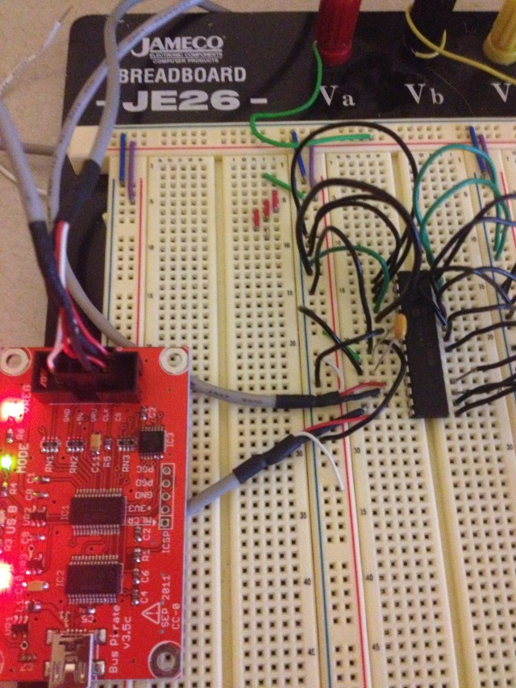

First look at the Microchip 23S17 SPI port expander

I’m looking at some ways to expand my input options on my Arduino projects. I was looking around at some ICs and I noticed that Microchip had some 16 bit port expander chips that worked with SPI and I2C so I ordered some samples.The part that I settled on was the 23S17, which communicates using SPI. The related part that does I2C is the 23017. It may be debatable which is better, but SPI can run much faster. In my case it probably wouldn’t matter though. There is also a 23×18 part with open-drain outputs, which would allow interfacing with circuits with different voltage levels.
In any case, I wanted to use my Bus Pirate to play around with my samples. The Bus Pirate can be configured to twiddle around with just about any device that speaks I2C or SPI (among other things), but that flexibility comes at the cost of some simplicity in setting things up. If you know what you are doing it actually is pretty simple, but I had to figure out a few things before I had things working.
The short version of this post is, power the device using the 3.3v supply on the Bus Pirate and use a bypass capacitor on the power connections of the 23S17.
In order to figure out the first thing I had to think about what I was getting from the Bus Pirate. I was getting 0xFF or 0x00 from every read request that I sent the device. This should have rung a bell much earlier than it did for me. Basically the Bus Pirate sends out the request without any ACK over SPI, and then we “read” the result, which was just a floating output on the target device. So, we don’t have any meaningful logic levels.
I had the target device powered by an external 5v supply. In most digital logic systems, the logic levels are dictated by the supply voltages and are defined as a percentage of the input levels often. Reading the data sheet reminded me of this fact.
I tried to use the open-drain outputs of the Bus Pirate along with the VPU (pull-up voltage) pin to get the BP to use 5v logic levels but this didn’t work for me. Theoretically I should have been able to make the BP use 5v logic levels by supplying the supply voltage to VPU and setting the output to HiZ open drain. I never got the VPU voltage to show up though. I measured 5v at the header pin but never saw it registered using the “v” command.
So I just powered the 23S17 from the 3v supply of the BP. Remember to turn the power supply pins on.
Once I had this, I could read the configuration registers. However, reading the data registers was a different story. I grounded all the pins and read 0x00, so far so good. I could read out 0x80 by setting the MSB high on PORTA. However, setting the second bit resulted in 0x00 again. However if I set both highest bits I could read out 0x0C. This was really strange. Low values in higher bits were masking the lower bits off.
I played with this a while and nothing was making any sense. I wasn’t getting random values, but the ports were not behaving correctly. I read over the datasheet a few more times and checked all the configuration registers and everything seemed like it was set up correctly. I played around with different pull-up and pull-down resistor combinations and nothing changed what I was seeing. Finally I found a forum post where someone mentioned that PORTA was especially susceptible to noise and that he was getting random values from successive reads of the port. He solved this issue with a bypass capacitor on the power coming into the 23S17. I gave this a shot and everything started working like it was supposed to.
So hopefully this saves someone a few hours of head-scratching.